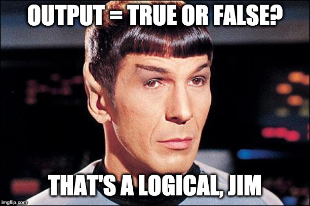

2+2==5[1] FALSEFrom time to time, I’ll wrap up these weekly wrap-ups (hah!) with a few Level-Ups. These are bits of info to provide a deeper understanding the week’s concepts and/or how to perform some slightly more advanced programming in R. Level-ups are optional, so don’t get bogged down or freak out if you don’t quite follow what’s going on.
FWIW, you should only be thinking about going through these extra level-ups if and only if you have a comfortable mastery of the week’s assigned material.
That said, I really recommend checking out this week’s level-up below. It has three parts, with the end result being an easy way to install and load multiple packages in R with a few lines of code.
It’s not terribly complicated and you’ll see the end result quite often this semester. If you’d rather not bother, then just go to the section HERE’S THE CHEAT CODE!!!. So without further delay, this week’s level-up(s).

We were introduced to logicals very briefly in this week’s DataCamp assignments. Logicals are operations that may be applied to objects in R that assess their relationship as a truth value. For example:
2+2==5[1] FALSEThe == (double equal sign) may be understood as posing the question “is equal to?” For example typing 2+2==4 in R will return TRUE. Logicals can be applied to string objects:
"tehran"=="tehran"[1] TRUE"tehran"=="davis"[1] FALSEto vectors:
y <- 1:5
y==3[1] FALSE FALSE TRUE FALSE FALSEthe third value, where the number 3 resides in vector y is labelled TRUE.
and can be used to compare assigned objects.
A list of logical operators in R can be found here, including greater-than and less-than. Using logical operators can be a powerful tool in a programmer’s repertoire. For example they can allow you to quickly highlight and select certain instances from large data sets. Below I’m highlighting numbers divisible by 5 in a list running from 1 to 50:
myList <- 1:50
myList[myList %% 5 == 0] # index those numbers divisible by 5 [1] 5 10 15 20 25 30 35 40 45 50Here I’m telling R to print a word based on whether myNumber is greater than 5:
myNumber <- 4
ifelse(test = myNumber>5, yes = "Yep, great than 5", no = "Nunca, nada, NOPE!")[1] "Nunca, nada, NOPE!"Try re-running the code above in your own console, with a value greater than 5 assigned to myNumber. There’s a little more on ifelse() below.
require()
Given our brief intro to logicals; there is in fact an alternative to library() for loading a previously installed package. We can use require():
Loading required package: tidyverse── Attaching core tidyverse packages ──────────────────────── tidyverse 2.0.0 ──
✔ dplyr 1.1.2 ✔ readr 2.1.4
✔ forcats 1.0.0 ✔ stringr 1.5.0
✔ ggplot2 3.4.2 ✔ tibble 3.2.1
✔ lubridate 1.9.2 ✔ tidyr 1.3.0
✔ purrr 1.0.1
── Conflicts ────────────────────────────────────────── tidyverse_conflicts() ──
✖ dplyr::filter() masks stats::filter()
✖ dplyr::lag() masks stats::lag()
ℹ Use the conflicted package (<http://conflicted.r-lib.org/>) to force all conflicts to become errorsrequire() has the additional benfit of returning a FALSE logical output if the requested package hasn’t been installed on your computer. This is in contrast to library() which just freaks out and reports an error (errors are bad as they can stop your execution). For example, let’s save the output of the following actions to an object called myVar.
For example running:
myVar <- library(xkcd)
myVarversus
myVar <- require(xkcd)
myVarIn both cases xkcd was not installed on your comp and an error was returned. However, with library(), nothing was saved to myVar, but require() returned a FALSE indicating that the requested package was not installed. Why do I bother to even bring this up?
The central reason that we are using R is to get in the practice of data transparency and replicability. Ultimately, for every analysis that you perform you should be able to provide me with the appropriate syntax in your notebook file and I should be able to re-run each of your analyses step by step on my own computer. One important consideration is that you may be using packages that I don’t have installed and loaded on my computer and vice versa. To deal with this you would need to include two lines for every package:
install.packages("package")library(package)If you use a lot of packages, this can become very repetitive (imagine using 10 packages).
A much more efficient way of doing things is to take advantage of that FALSE that require() returns. But first we need to install a package called pacman. Before we do this, input the next to lines seperately:
Recall from above that require() produces a FALSE if the requested package is NOT installed on your computer. So, assuming that pacman is not installed on your computer the first line will produce a FALSE and the second will produce a TRUE.
So what is that second line then? NEGATION.
Placing an exclamation point in fron of a statement essentially reads as “not true”. For now just understand that using this syntax we can create a line of code that checks to see if pacman is installed on your computer, and if not it installs it:
if (!require("pacman"))
install.packages("pacman")The above code is a conditional if-statement. It literally reads:
!require("pacman") is TRUE (i.e., TRUE = pacman is not installed on your computer).TRUE, then run install.packages("pacman").In theory you could run this line for every package, but that would be tedious as well and is not really a simpler solution. Fortunately pacman contains a function that simplifies this for us, pacman::p_load() function. To get a feel for what this function does run the following line:
? pacman::p_load()The ? brings up an online help module for the named function. In this case the function is p_load() from the pacman package.
You’ll see that pacman::p_load() checks to see if a package is installed, if not it attempts to install the package from CRAN and/or any other repository. After that it loads all listed packages.
Let’s try a few packages that you haven’t installed but are going to be useful to us later when we do ANOVA. FWIW I usually have a code chunk at the top of every notebook that uses this template, swapping in the various packages that I intend to use.
This bit of code installed and loaded the afex, lmerTest, and plyr packages. To test that everything worked, try:
data(obk.long, package = "afex")
afex::aov_ez("id", "value", obk.long, between = c("treatment", "gender"),
within = c("phase", "hour"), observed = "gender")Contrasts set to contr.sum for the following variables: treatment, genderAnova Table (Type 3 tests)
Response: value
Effect df MSE F ges p.value
1 treatment 2, 10 22.81 3.94 + .198 .055
2 gender 1, 10 22.81 3.66 + .115 .085
3 treatment:gender 2, 10 22.81 2.86 .179 .104
4 phase 1.60, 15.99 5.02 16.13 *** .151 <.001
5 treatment:phase 3.20, 15.99 5.02 4.85 * .097 .013
6 gender:phase 1.60, 15.99 5.02 0.28 .003 .709
7 treatment:gender:phase 3.20, 15.99 5.02 0.64 .014 .612
8 hour 1.84, 18.41 3.39 16.69 *** .125 <.001
9 treatment:hour 3.68, 18.41 3.39 0.09 .002 .979
10 gender:hour 1.84, 18.41 3.39 0.45 .004 .628
11 treatment:gender:hour 3.68, 18.41 3.39 0.62 .011 .641
12 phase:hour 3.60, 35.96 2.67 1.18 .015 .335
13 treatment:phase:hour 7.19, 35.96 2.67 0.35 .009 .930
14 gender:phase:hour 3.60, 35.96 2.67 0.93 .012 .449
15 treatment:gender:phase:hour 7.19, 35.96 2.67 0.74 .019 .646
---
Signif. codes: 0 '***' 0.001 '**' 0.01 '*' 0.05 '+' 0.1 ' ' 1
Sphericity correction method: GG Congrats! You’ve just run a 2x2 mixed effects ANOVA! We’ll revisit what exactly is going on here in about 10 weeks.
The example above just pulls data directly from a url, what if you want to download the data file directly onto your computer and load it from there?
Well, there’s a package for that… downloader. Let’s install this package and download the data from above. Also, check out the additional notation in the code below:
# within the R code sections, hashtags create comments, sections of code
# that are not interpreted by the computer, but may serve to inform others
# (and typically yourself later in life) about what exactly in the hell is
# going on here. GET IN THE PRACTICE OF COMMENTING YOUR CODE. You'll thank
# yourself later. I can't count how many times I've written code only
# to come back to it months later wondering what in the hell I was
# doing, thinking!!
# Here I'm using comments to inform you step-by-step
# what each line is doing:
# install and load "downloader" package, this assumes you
# have "pacman" installed and loaded *see section above:
pacman::p_load(downloader)
# get the url of the file you want to download and assign it
# to an object ("dataURL"):
dataURL <- "https://www.uvm.edu/~statdhtx/methods8/DataFiles/Tab2-1.dat"
# decide on what name you want to give the file. In this case I'm extracting
# using the basename from the web url: Tab2-1.dat. In truth you
# can name it whatever you want (see commented example)
filename <- basename(dataURL)
#filename <- "you_can_name_it_what_you_like.txt"
# download the file to your current R-project folder:
download(url = dataURL, filename)Keep in mind that objects are just placeholders. So if I was so inclined I could have accomplished all of the above with just one line:
download(url = "https://www.uvm.edu/~statdhtx/methods8/DataFiles/Tab2-1.dat", destfile="Tab2-1.dat")
# destfile is a parameter for naming what you download.From here I could just import the Tab2-1.dat file from my computer using the GUI method above.